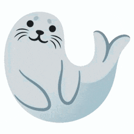
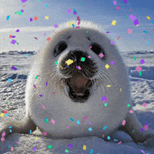
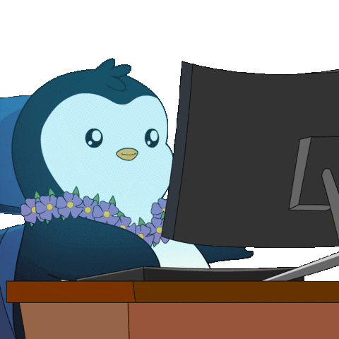
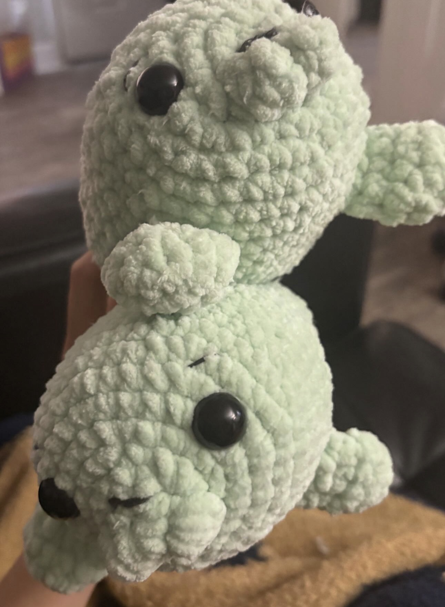
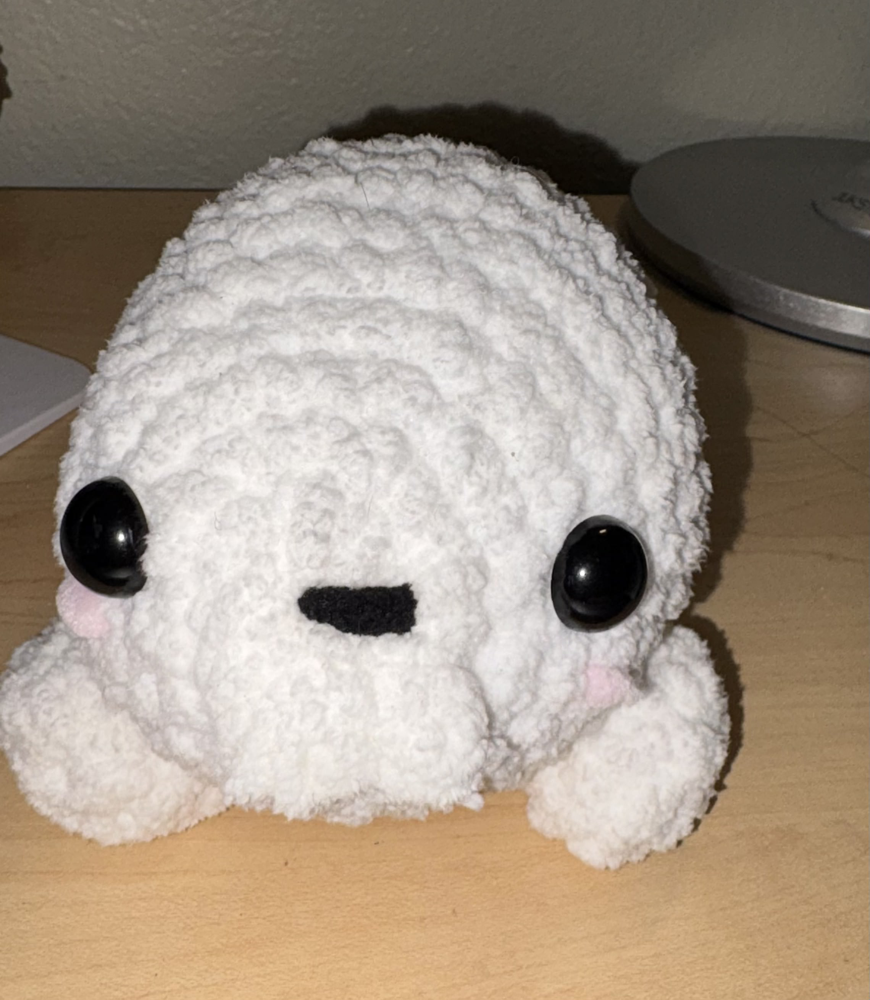

besides making media art,
i enjoy playing the guitar,
watching videos of seals,
crocheting,
playing games like roblox
generally, most of my time goes to making media art!
and as you may probably tell, seals are my favorite animal


here are some examples of the crocheted seals i've made!

